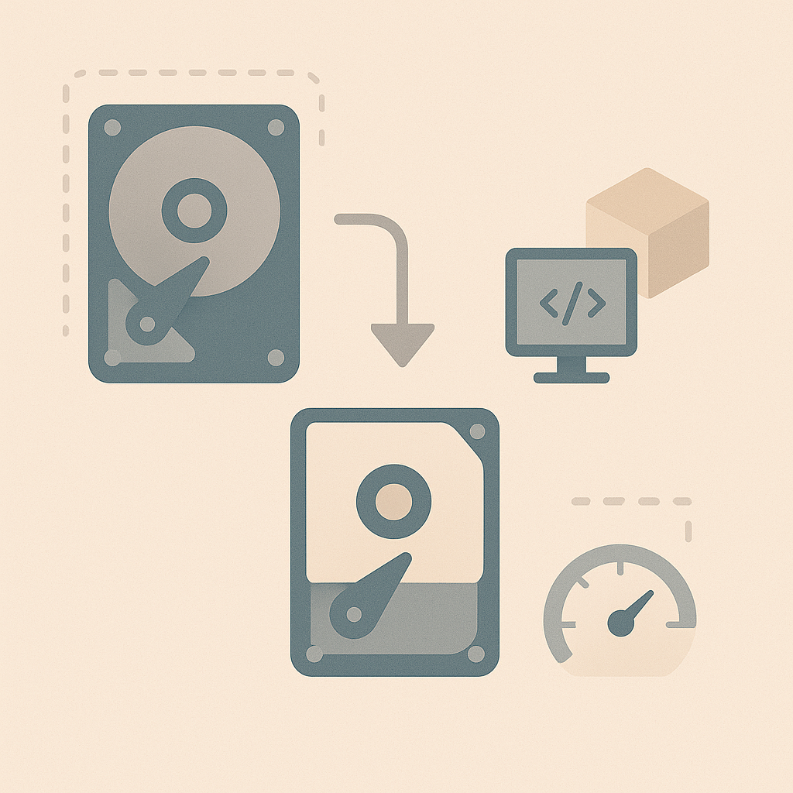

We believe security software like Kicksecure needs to remain Open Source and independent. Would you help sustain and grow the project? Learn more about our 14 year success story and maybe DONATE!
Grow Virtual HarddiskAdvanced DocumentationNested VirtualizationPrevious page: Grow Virtual HarddiskIndex page: Advanced DocumentationNext page: Nested VirtualizationShrink Virtual Hard Disk Size

Free disk space. Decrease the size of a virtual disk. Decrease virtual machine storage capacity.
Introduction
Over the course of many system upgrades, logging, and similar activity, the disk image files can grow substantially. Deleting obsolete files does not automatically shrink the disk size again, because it has grown to accommodate the data.
Overview
Note: When you create a large file or download a large file and then delete it from the virtual machine (VM), the space will not be freed automatically. Disk shrinking is required.
In summary, the following steps are required to shrink the disk.
1 Inside the virtual machine (VM): Delete files to free space.
2 During VM boot: Restart the virtual machine and stop at the grub boot menu.
3
During VM boot: At the boot menu, boot into live mode - sysmaint session and make a temporary kernel boot
parameter change by changing bdev_allow_write_mounted=0 to
bdev_allow_write_mounted=1 for this boot only.
Elaborated below.
4
Inside the virtual machine (VM): Apply the
zerofree procedure.
5 Shut down the VM.
6 On the host operating system (OS): Run a virtualizer-specific command to release the freed space.
7 Done.
Steps
 Warning: This is for testers-only!
Warning: This is for testers-only!
Platform-specific. Select your virtualizer.
- Non-Qubes: See below.
- Qubes: Undocumented. Unspecific to Kicksecure. Self Support First Policy applies. Refer to Qubes documentation.
A tool called zerofree is needed to shrink the backing
virtual disk file. Since the default partitions are ext4,
the process might be a bit involved:
1 Inside the VM:
2
Install the package zerofree in the virtual machine you
want to shrink.
Install package(s) zerofree following these
instructions:
1 Platform specific notice.
- Kicksecure: No special notice.
- Kicksecure-Qubes: In Template.
2 Update the package lists and upgrade the system.
sudo apt update && sudo apt full-upgrade
3
Install the zerofree package(s).
Using apt command line --no-install-recommends option is in
most cases optional.
sudo apt install --no-install-recommends zerofree
4 Platform specific notice.
- Kicksecure: No special notice.
- Kicksecure-Qubes: Shut down Template and restart App Qubes based on it as per Qubes Template Modification.
5 Done.
The procedure of installing package(s) zerofree is
complete.
3 Free space inside the VM.
Delete what you no longer need in the VM, and run
apt-get purge, apt-get autoremove,
apt-get clean, etc. as needed.
4 During VM boot:
5 Restart the virtual machine and stop at the grub boot menu.
6 At the boot menu, boot into live mode - sysmaint session. [1]
7
Make a Temporary Kernel Boot Parameter Change by changing
bdev_allow_write_mounted=0 to
bdev_allow_write_mounted=1 for this boot only.
[2]
8 Inside the VM:
9 Inspect Kernel Command Line.
Optional. For verification of kernel boot parameter change.
cat /proc/cmdline | grep --color bdev_allow_write_mounted
Expected output:
bdev_allow_write_mounted=110 Run zerofree.
Platform-specific. Select your virtualizer.
VirtualBox
sudo
zerofree -v /dev/sda3
KVM
sudo
zerofree -v /dev/vda1
Qubes
Undocumented. Unspecific to Kicksecure. Self Support First Policy applies.
Refer to the Qubes OS user documentation.
11 Shut down the VM.
12 On the host:
13 Compact the host VM image.
Platform-specific. Select your virtualizer.
VirtualBox
Host operating system-specific.
- Linux:
VBoxManage modifymedium disk "/path/to/disk.vdi" --compact - Windows:
VBoxManage.exe modifymedium disk "C:\path\to\disk.vdi" --compact
Unspecific to Kicksecure. Self Support First Policy applies.
14 Done.
Forum discussions:
KVM
14 Open a terminal on the host.
15 Switch to root.
sudo -s
16
Change directory to the /var/lib/libvirt/images folder.
cd /var/lib/libvirt/images
17
View files inside the /var/lib/libvirt/images folder.
ls
18
Create a backup of the disk you want to shrink by moving
YourVirtualMachineDisk.qcow2 to
YourVirtualMachineDisk.qcow2.backup.
Note:
- Replace
YourVirtualMachineDisk.qcow2with the actual name of your virtual hard disk. - Replace
YourVirtualMachineDisk.qcow2.backupwith the backup name for your virtual hard disk.
mv YourVirtualMachineDisk.qcow2 YourVirtualMachineDisk.qcow2.backup
19
Shrink the disk using qemu-img.
qemu-img convert -O qcow2 -p YourVirtualMachineDisk.qcow2.backup YourVirtualMachineDisk.qcow2
20 Boot up the VM and see if it is working. If it is, you can delete the backup of the qcow2 file.
21 Done.
There are more advanced approaches using thin provisioned images based on a static qcow2 backing file, which is often preferred. However, the above is a basic method for producing a smaller qcow2 disk file. [3]
Forum discussion: Is it possible to re-shrink the qcow2 image files?
Qubes
Undocumented. Unspecific to Kicksecure. Self Support First Policy applies.
Refer to the Qubes OS user documentation.
Build from Source Code
Refer to Build and Update Kicksecure from Source Code and use this setting:
--vmsize 50G
Future
Either:
- A
dracutmodule, or - B
mkosi-initrdsystemd unit,
that runs zerofree before mounting the root disk would
be useful. Such a feature does not exist yet in any Linux
distribution.
Forum Discussion
See Also
Footnotes
- Alternatively, booting into persistent mode - recovery mode would also be possible. But in that case, additional commands would need to be typed. systemctl stop systemd-journald.socket systemctl stop systemd-journald.service mount -o remount,ro /
- Alternatively, advanced users can make Permanent Configuration Changes. This is more complicated. Forum discussion
- Credit goes to forum user tempest: post in "Is it possible to re-shrink the qcow2 image files?"
Categories: Documentation